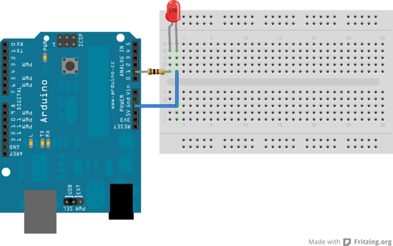

Wir schliessen einen 100 Ohm Widerstand zwischen einem analogen Pin des Arduino (hier: A1) und dem langen Bein einer LED. Das kurze Bein der LED verbinden wir mit GND.

```c++
/*
Lasse eine LED im sekundentakt blinken.
*/
// die LED ist an diesem Pin angeschlossen
int led = A1;
// initalisiere den LED Pin als Output
void setup() {
pinMode(led, OUTPUT);
}
// Dies ist die Hauptroutine
void loop() {
digitalWrite(led, HIGH); // LED leuchtet
delay(1000); // Pause eine Sekunde
digitalWrite(led, LOW); // LED ist aus
delay(1000); // Pause eine Sekunde
}
```